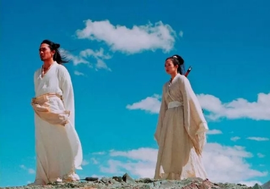
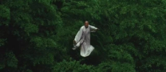

Shaanxi Phi Phi: "A narration of the ancient things, hands and dances a million soldiers." The shadow film originated in Shaanxi and flourished in Hebei. It has spread to various countries in the world, and has been obsessed with countless foreign fans, and has been eagerly collected by museums all over the world. History Shadow play, also known as "shadow play" or "light shadow play", is a silhouette of a character made of animal skin or cardboard. It is performed by a bright cloth under the illumination of a candle or burning alcohol. It is a Chinese Han folk. One of the most popular rumors. The shadow play is an ancient Chinese traditional art. The old Beijingers call it "the shadow of the skin." According to historical records, the shadow play began in the Warring States Period and flourished in the Han Dynasty. It flourished in the Song Dynasty and spread to West Asia and Europe during the Yuan Dynasty. It has a long history and a long history. Custom The ancient people were superstitious, so in the vast rural areas of the past, the shadow play was very popular. After the folk customs activities such as praying for rain, praying for the sun, thanking the gods, and seeking for the children, they all had the performances of the movie, called "The God of God". , movie lyrics instead of the people to pray for peace and prosperity to the gods . In addition, there are shadow plays in the celebration of the harvest, the wedding, the fun, and the funeral of the dead. The people are busy and mournful. From the form to the content, the shadow play is more good and hateful. In the shadow styling consciousness, the traditional culture of the Chinese nation is precipitated. Craftsmanship The production process of the shadow film is intricate and delicate, and a beautiful shadow film contains the efforts of many master craftsmen, so it will be so vivid. The production process of the shadow film mainly includes eight processes: 1. Skin selection: The market generally uses young, black- brown bulls . This skin is moderately thick, firm and flexible, and has a bit of transparency in the green. The shadow is produced. Into. 2. Leatherworking: There are two methods, one is “clean skin” and the other is “grey skin”. The net skin is to soak the selected cowhide in clean water for two or three days, remove the scraped cow hair, and then scrape off the meat residue. Three of them gradually scraped off Lippi, and the old craftsman was light and steady, and the leather was thin and moderate. Gray leather is used to repeatedly soak the cowhide with various chemicals. The leather scraped by this method is easier to engrave. 3. Artwork: The design of the shadow character often reflects the personality of the face and the commonality of the costume . Therefore, the shadow figure of a shadow class often has one or two thousand shadow figures, while the shadow body has only a few hundred. There are special drawings when making shadows, called "samples" , which are passed down from generation to generation. That is to say, according to the different identities and personalities of the characters, different images are designed, but this design has certain programs, such as Wusheng's martial arts towel, the general's shawl, the marshal Dai Chongtian helmet and so on. 4. Released: The sculptor enters the scraped skin into pieces, and after using the wet cloth to soften, use a special push plate and push the oil slightly to make the cowhide smoother and smoother, and can relieve the contraction of the cortex. Then you can trace the pattern. 5. Engraving : There are usually eleven, two, or even more than 30 carving tools. The mouth of the artist's engraving is as follows: the cherry blossom flat knife, the four-word flat knife push, the sleeves on the side of the chisel knife, the flower sharp knife engraved. There are virtual and solid points in the engraving line, as well as dark lines and painted lines. 6. Dressing: After the shadow carving, it is the color. The coloring is a step in the production of shadows. According to different characters and costumes, different colors are used. One character is a Chinese painting with a meticulous color. The old artists use color very carefully. Most of them use copper, silver, silver, and other mineral plants to produce red, green, apricot and other colors. The method of coloring is also different. 7. Sweating and ironing. 8. The affixing is completed. A dimly lit oil lamp hit a dozen. After the curtain, three or five old artists sat in the hands of the white curtain and manipulated the shadows in their hands. In front of the curtains were rows of spectators, accompanied by the singing of the master, slowly stating a A folklore story, along with the songs of percussion and string music, is a big show, and the cheers are constantly filled with strong local flavor. Nowadays, the world only knows the movie but does not know the shadow play. The life is updated in a generation, and the production process and performance technology of the shadow play gradually fade out of people's vision in the renewal. Shaanxi Huaxian Shadow Play, Huayin Laocao, Ganxian Agongcao, and Fuping County Strings are listed in the National Project on Intangible Cultural Heritage announced by the State Council with extremely high artistic attainments and original ecological cultural characteristics.Studying and protecting the shadow art of Shaanxi is of great significance to the inheritance of traditional culture. Such a beautiful shadow actor and a wonderful shadow play, such a shining star can not let it fall into the long river of history. Therefore, we should act, we can have time to meet three or five friends on weekdays, go to see a shadow play, or learn from the shadow master, or buy a few shadow play villains, send relatives, friends, foreign friends are good The choice, but also the spread of China's excellent culture, why not? Although they are all trivial things, few people can do it. In fact, every cluster of faint starlight can be gathered into a sea of lights, and each of us can become the inheritor of the shadow play. In order to better pass on and carry forward the shadow play, let us add fire to it!
Nowadays, Chinese films are gradually becoming international, and the variety of forms and contents has made us overwhelmed. But as more and more foreign films have begun to learn from Chinese elements and succeed, this has forced the public to once again turn their attention to China's own culture. "Sword Rain" Life may not be happy, death may not be bitter. "Jian Yu" tells the story of a series of hurricane rains that the number one female swordsman "fine rain" encountered in a series of people on the way to the body of Rama disappeared eight hundred years ago. That is, a snarling and slightly sinister detective story, the soft and soft atmosphere of the atmosphere rendering and the lingering Chinese feelings that are lingering are the characteristics of this film. As a martial arts type film, the story of "Jian Yu" is involved in the typical martial arts elements such as rivers and lakes, treasures, hegemony, revenge, and singularity. The loyalty and filial piety behind the theme of the martial arts film is the authentic Chinese tradition. These traditional martial arts cultures support the grand narrative and historical imagination of this film. Moreover, the action design of this film expresses the beauty of Chinese traditional martial arts very well. The drizzle of the forty-two roads, the double-knife of the color dramatist, and the hidden weapon of Lei Bin... both meet the character image and extremely difficult to combine the elegance of the oriental culture without losing the real sense. The bones want to express the classical temperament, so the film action language is full of imagination, and the martial arts scenes with flowing waters have a convincing sense of flying, which is completely in line with the way we imagined ancient knights. China has a long history of 5,000 years of history. Chinese culture is profound and profound, so we must understand Chinese culture. In modern and contemporary times, we can also glimpse our traditional culture from the perspective of entertainment, from film and television, to achieve the purpose of understanding the Chinese cultural circle. "hero" If a person is unknown, he can concentrate on practicing the sword. The martial arts action film can be said to be one of the most distinctive films in China. It elaborates on the spirit of the Eastern Chivalry and presents Chinese Kung Fu through the film. As the spiritual sustenance of the Chinese, it has created an ideal world of heroism for us. The martial arts of "Hero" is a classic.  "Hero" distinguishes stories in red, white and blue. The red reaction reflects the blood in the unnamed subconscious. The blue is the guess and imagination of the Qin king. It is a tragic color. The nameless thorn is a tragedy. The love of flying snow and the residual sword is also a tragedy. White is the truth of the story, it is a beautiful killing. This reflects the ancient brushstrokes of ancient Chinese words. The fighting in the film is wonderful, flying into the sky, and it is very beautiful. Let the martial arts "anti-strike" give way to the "performance" pursuit of gentle and elegant effect, and feel the ultimate beauty. Especially the scene of the nameless fight with the sky. The old man squats on the side of the pipa, and the fighting picture is slowed down, which can be seen as simple and extremely ugly. It is hard to understand. This is the reason why the film pursues Taoism's "nothing", Confucian "empty", "big sounds", and "elephant invisible". The integration of traditional culture into martial arts art creates a pure and ethereal atmosphere that is fully integrated into the essence of traditional Chinese Confucianism. "Crouching Tiger, Hidden Dragon" Crouching Tiger, Hidden Dragon in the rivers and lakes, isn’t the human heart? There is a murder in the sword, isn’t it human? "Crouching Tiger, Hidden Dragon" is the most classic ancestral film of martial arts and Chinese style. In addition to a large number of martial arts scenes in the film, the rendering of music also makes people feel the unique cultural heritage of China.  The opening of the film was the theme music "Crouching Tiger, Hidden Dragon". The sad and deep melody of the instrument played through the whole film and explained the feelings and life of the Chinese. The background music in the film is mainly the emotional scene between Li Mubai and Yu Xiulian, Yu Jiaolong and Luo Xiaohu. Start with a low erhu, then follow up on strings and orchestras. When the background music is halfway through, there is a second-degree portamento of the erhu, which instantly sets off the atmosphere of tenderness. This piece of music is also accompanied by the soft singing style of the girl to enhance the picture of the music, giving the film a comfortable experience that has never been seen before. In addition, the use of the soundtrack in the "Through the Bamboo Forest", the unique long-distance, bleak tone makes the mysterious atmosphere of the ancient rivers and lakes martial arts come to the surface; the sound of the smashing sound in the "Confrontation" is like the sound of Jin Ge, let People feel the murderousness in the ancient song "The Ten Faces Ambush"; the "Spiritual Green Sword" uses the erhu's pure, bright, round, sweet, full and penetrating tone, showing the detachment and ethereal mood. . The combination of music makes the film unique and can be understood by people all over the world. Whether it is a young movie released in recent years or an old movie from the past, from these films we can glimpse the profoundness of Chinese culture and have a long history. Only by reading our own culture can we truly appreciate their beauty.